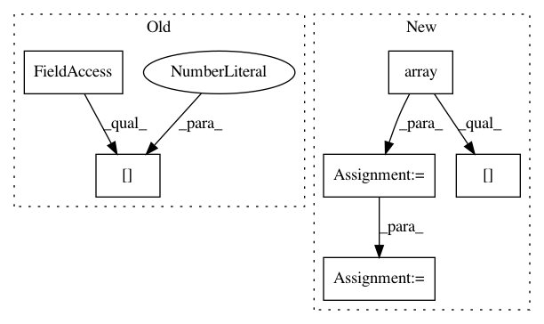

9c158b87f5fb2dca1ed95884e667ab2fc218e1b7,dragonn/models.py,SequenceDNN,deeplift,#SequenceDNN#,175
Before Change
Returns (num_task, num_samples, 1, num_bases, sequence_length) deeplift score array.
if sys.version_info[0] != 2:
raise RuntimeError("DeepLIFT requires Python2!")
assert len(np.shape(X)) == 4 and np.shape(X)[1] == 1
from deeplift.conversion import keras_conversion as kc
After Change
score_func = deeplift_model.get_target_contribs_func(
find_scores_layer_idx=0)
// use a 40% GC reference
input_references = [np.array([0.3, 0.2, 0.2, 0.3])[None, None, :, None]]
// get deeplift scores
deeplift_scores = np.zeros((self.num_tasks,) + X.shape)
for i in range(self.num_tasks):
deeplift_scores[i] = score_func(
task_idx=i,
input_data_list=[X],
batch_size=batch_size,
progress_update=None,
input_references_list=input_references)
return deeplift_scores
def in_silico_mutagenesis(self, X):
In pattern: SUPERPATTERN
Frequency: 3
Non-data size: 6
Instances
Project Name: kundajelab/dragonn
Commit Name: 9c158b87f5fb2dca1ed95884e667ab2fc218e1b7
Time: 2017-05-01
Author: jisraeli@stanford.edu
File Name: dragonn/models.py
Class Name: SequenceDNN
Method Name: deeplift
Project Name: HazyResearch/fonduer
Commit Name: 0110937ab04f4298f98963bed1de08962d776b24
Time: 2020-07-01
Author: wajdikhattel@think-it.io
File Name: src/fonduer/utils/data_model_utils/structural.py
Class Name:
Method Name: common_ancestor
Project Name: HazyResearch/fonduer
Commit Name: 0110937ab04f4298f98963bed1de08962d776b24
Time: 2020-07-01
Author: wajdikhattel@think-it.io
File Name: src/fonduer/utils/data_model_utils/structural.py
Class Name:
Method Name: lowest_common_ancestor_depth